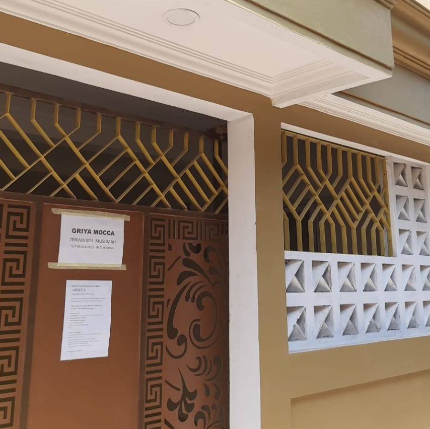

Selamat Datang di website Kost Muslimah Surakarta, ingin mencari kost dimana hari ini?
Kost De Mocca
Kost Muslimah dekat Universitas Muhammadiyah Surakarta.
Kost D'Alamanda
Kost Muslimah dekat Universitas Negeri Sebelas Maret.

Kost De Mocca
De Mocca Muslimah Kost, merupakan kost khusus muslimah yang berjarak hanya 500 meter dari Kampus 4 Universitas Muhammadiyah Surakarta dan 1 KM dari Edutorium UMS. De Mocca Muslimah Kost juga dikelilingi oleh berbagai macam warung makan, mini market, serta kebutuhan mahasiswi lainnya, membuat kost ini sangat strategis dan dapat menjadi pilihan kost kamu .
D'Alamanda Muslimah Kost merupakan kost khusus muslimah yang dekat dengan gerbang belakang UNS, dengan jarak hanya 1,3 KM dari gerbang belakang UNS, dikelilingi oleh berbagai kebutuhan mahasiswi seperti warung makan, minimarket, fotocopy, dll. membuat kost ini dapat dijadikan kost yang ideal untuk ditempati.